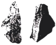
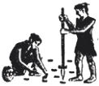
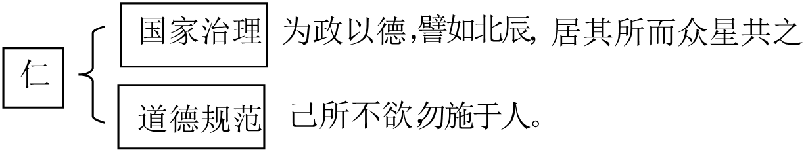
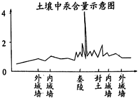
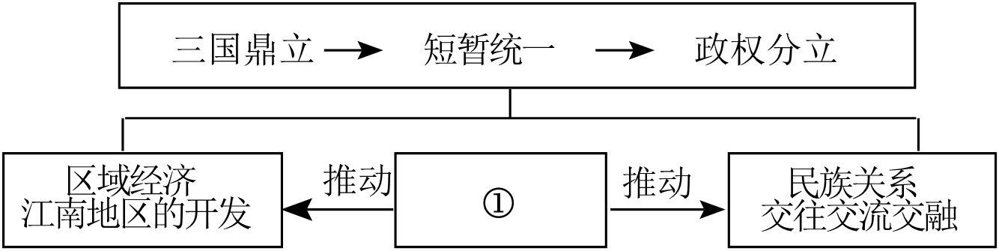

2023年北京市中考历史试卷 · 选择题 第1、2、3、4、5题 · 对应解析
1．（1.5分）考古发现是了解史前社会历史的重要依据。以下材料可作为我国原始农业发展证据的是（ ）
A．

北京人制作的石器B．河姆渡遗址出土的稻谷C．

农耕生活想象图D．曲辕犁模型【分析】本题主要考查了我国原始农业发展的相关依据，注意图片内容的识读。
【解答】河姆渡原始居民主要种植水稻。我国是世界上最早栽培水稻的国家，故B符合题意，主要靠采集为生，排除A，不能作为研究历史的一手史料；曲辕犁模型反映的是唐朝的农业生产工具，排除D。
故选：B。
【点评】本题主要考查学生综合运用所学知识解决问题的能力。理解并识记我国原始农业发展的相关依据。
2．（1.5分）如图示意图表现的是中国古代某一思想家的主张，这位思想家是（ ）

A．老子B．孔子C．墨子D．韩非
【分析】本题主要考查了孔子的思想观点与政治主张，注意题干图示的识读。
【解答】结合所学知识可知，孔子是春秋后期鲁国人，他的核心思想是“仁”，即要有爱心和同情心，勿施于人”“己欲立而立人，将“仁”作为处理人与人关系的最高行为准则和道德规范，孔子在政治上推崇西周的制度，要求统治者爱惜民力。他反对苛政，使人民心悦诚服。孔子的学说对中国古代文化的发展有非常重要的影响。故B符合题意，排除A、非攻”；韩非主张“以法治国”。
故选：B。
【点评】本题主要考查学生综合运用所学知识解决问题的能力。理解并识记孔子的思想观点与政治主张。
3．（1.5分）战国时期，铁制工具的使用进一步推广，使大量荒地得到开垦。开垦者缴纳赋税，新兴地主阶级逐渐壮大。同时，铁制工具在开挖河渠中的使用成就了大型水利工程。以上材料说明（ ）
A．生产工具的进步推动社会发展
B．铁制工具完全取代了木石工具
C．各国变法带来生产工具的改进
D．水利工程为国家统一创造条件
【分析】本题考查春秋战国时期铁器的使用和牛耕的推广，掌握相关的基础知识。
【解答】据题干“战国时期，铁制工具的使用进一步推广。开垦者缴纳赋税，新兴地主阶级逐渐壮大，铁制工具在开挖河渠中的使用成就了大型水利工程”可知，提高了社会生产力；题干材料说明生产工具的进步推动社会发展、各国变法带来生产工具的改进，排除BCD。
故选：A。
【点评】本题考查春秋战国时期铁器的使用和牛耕的推广，考查学生的理解和分析能力，解题关键是知道题干材料说明生产工具的进步推动社会发展。
4．（1.5分）《史记》记载：秦始皇陵地宫中“以水银（汞）为百川江河大海”。考古工作者对皇陵遗址及周边进行汞含量测定，其结果（见图）（ ）
①秦始皇北击匈奴有了考古证据
②秦始皇陵地宫位于外城墙之下
③该成果得益于考古学与化学的结合
④考古发现与文献记载可以相互印证

A．①②B．②③C．③④D．①④
【分析】本题考查秦朝巩固统一的措施，掌握相关的基础知识。
【解答】据题干“《史记》记载：秦始皇陵地宫中‘以水银（汞）为百川江河大海’。考古工作者对皇陵遗址及周边进行汞含量测定，秦陵附近汞含量很高，这表明该成果得益于考古学与化学的结合。故C符合题意、秦始皇陵地宫位于外城墙之下。
故选：C。
【点评】本题考查秦朝巩固统一的措施，考查学生的理解和分析能力，解题关键是知道题干材料表明该成果得益于考古学与化学的结合、考古发现与文献记载可以相互印证。
5．（1.5分）如图是一位同学绘制的某单元的知识结构示意图，其中①处应为（ ）

A．人口迁徙B．孝文帝改革
C．大运河的开通D．经济重心的南移
【分析】本题考查北方游牧民族的内迁，掌握相关的基础知识。
【解答】据图片并结合所学可知，三国两晋南北朝时期；边疆少数民族内迁促进了民族交融；孝文帝改革与江南地区的开发无关；大运河的开通是隋朝，排除C，不能说明经济重心南移。
故选：A。
【点评】本题考查北方游牧民族的内迁，考查学生的理解和分析能力，解题关键是知道图中①处应为人口迁徙。